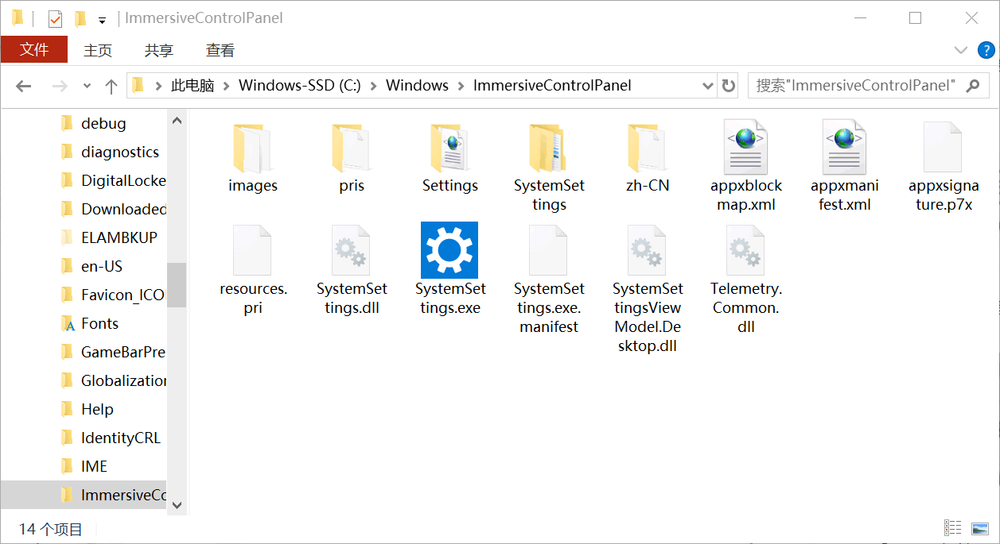

数据管理技术的3个发展阶段
在目前阶段，存储和管理数据都离不开数据库。例如，学校需要使用数据库来存储学生和教师的信息；公司需要使用数据库来存储公司的资料和员工的信息。当数据存储到数据库后，数据库管理系统就会对这些数据进行组织和管理。
到了 20 世纪 50 年代中期， 这时计算机刚刚开始萌芽，还没有类似于磁盘等专门管理数据的存储设备，只有纸带、卡片、磁带等外存。所以计算机只能局限于科学技术方面，主要用于科学计算。
也就是说，在人工管理阶段，数据主要存储在纸带、磁带等介质上，或者直接通过手工来记录。
人工管理阶段的特点如下：
图 1 是 Windows 下的文件系统。
图 1 中有很多文件夹，每个文件夹里又有很多文件，这就是文件系统。文件系统通过文件的存储路径和文件名来访问文件中的数据，我们可以查看、修改、添加和删除这些文件。
相对于人工管理阶段而言，文件系统使数据管理变得简单，不用再为了一个文件而翻箱倒柜的查找。但是，这些文件中的数据没有进行结构化管理，查询起来还是不方便。
文件系统阶段的特点如下：
数据库系统阶段使用专门的数据库来管理数据，用户可以在数据库系统中建立数据库，然后在数据库中建立表，最后将数据存储在这些表中。用户可以直接通过数据库管理系统来查询表中的数据。
相对于文件系统来说，数据库系统实现了数据结构化。在文件系统中，独立文件内部的数据一般是有结构的，但文件之间不存在联系，因此整体来说是没有结构的。 数据库系统虽然也常常分成许多单独的数据文件，但是它更注意同一数据库中各数据文件之间的相互联系。
数据库系统阶段的特点如下：
数据管理就是对各种数据进行分类、组织、编码、查询和维护，主要经历了 3 个阶段，即人工管理阶段、文件系统阶段和数据库系统阶段。每一个阶段都是以减小数据冗余、增强数据独立性和方便操作数据为目的进行发展。数据库管理系统（DBMS）是数据库的核心软件之一，是位于用户与操作系统之间的数据管理软件，用于建立，使用和维护数据库。
数据冗余是指数据之间的重复，也可以说是同一数据存储在不同数据文件中的现象。
1. 人工管理阶段
在计算机出现之前，人们主要利用纸张和计算工具（如算盘和计算尺）来进行数据的记录和计算，依靠大脑来管理和利用数据。到了 20 世纪 50 年代中期， 这时计算机刚刚开始萌芽，还没有类似于磁盘等专门管理数据的存储设备，只有纸带、卡片、磁带等外存。所以计算机只能局限于科学技术方面，主要用于科学计算。
也就是说，在人工管理阶段，数据主要存储在纸带、磁带等介质上，或者直接通过手工来记录。
人工管理阶段的特点如下：
- 数据不能长期保存
- 不便于查询数据
- 数据不能共享，冗余度大
- 数据不具有独立性
2. 文件系统阶段
在 20 世纪 50 年代后期到 20 世纪 60 年代中期，计算机中的磁盘和磁鼓等直接存取设备开始普及。这时，可以将数据存储在计算机的磁盘上。这些数据都以文件的形式存储，然后通过文件系统来管理这些文件。图 1 是 Windows 下的文件系统。

图 1 Windows 的文件系统
图 1 Windows 的文件系统
图 1 中有很多文件夹，每个文件夹里又有很多文件，这就是文件系统。文件系统通过文件的存储路径和文件名来访问文件中的数据，我们可以查看、修改、添加和删除这些文件。
相对于人工管理阶段而言，文件系统使数据管理变得简单，不用再为了一个文件而翻箱倒柜的查找。但是，这些文件中的数据没有进行结构化管理，查询起来还是不方便。
文件系统阶段的特点如下：
- 数据可以长期保存
- 数据由文件系统来管理
- 数据冗余大，共享性差
- 数据独立性差
- 无法应对突发事故（文件误删，磁盘故障等）
3. 数据库系统阶段
在 20 世纪 60 年代后期，随着网络技术的发展，计算机软/硬件的进步，出现了数据库技术，该阶段就是所谓的数据库系统阶段。数据库系统阶段使用专门的数据库来管理数据，用户可以在数据库系统中建立数据库，然后在数据库中建立表，最后将数据存储在这些表中。用户可以直接通过数据库管理系统来查询表中的数据。
相对于文件系统来说，数据库系统实现了数据结构化。在文件系统中，独立文件内部的数据一般是有结构的，但文件之间不存在联系，因此整体来说是没有结构的。 数据库系统虽然也常常分成许多单独的数据文件，但是它更注意同一数据库中各数据文件之间的相互联系。
数据库系统阶段的特点如下：
- 数据由数据库管理系统统一管理和控制
- 数据共享性高，冗余度低
- 数据独立性强
- 数据粒度小
数据管理经历的各个阶段都有自己的背景及特点，数据管理技术也在发展中不断地完善，其 3 个阶段的比较如下表所示。数据粒度是数据库中数据的细化程度。细化程度越高，粒度越小；细化程度越低，粒度越大。
| 数据管理的3个阶段 |
人工管理（20 世纪 50 年代中期）
|
文件系统（50 年代末至 60 年代中期） | 数据库系统（60 年代后期） |
|---|---|---|---|
| 应用背景 | 科学计算 | 科学计算、管理 | 大规模数据、分布数据的管理 |
| 硬件背景 | 无直接存取存储设备 | 磁带、磁盘、磁鼓 | 大容量磁盘、可擦写光盘、按需增容磁带机等 |
| 软件背景 | 无专门管理的软件 | 利用操作系统的文件系统 | 由 DBMS 支撑 |
| 数据处理方式 | 批处理 | 联机实时处理、批处理 | 联机实时处理、批处理、分布处理 |
| 数据的管理者 | 用户/程序管理 | 文件系统代理 | DBMS 管理 |
| 数据应用及其扩充 | 面向某一应用程序难以扩充 | 面向某一应用系统、不易扩充 | 面向多种应用系统、容易扩充 |
| 数据的共享性 | 无共享、冗余度极大 | 共享性差、冗余度大 | 共享性好、冗余度小 |
| 数据的独立性 | 数据的独立性差 | 物理独立性好、逻辑独立性差 | 具有高度的物理独立性、具有较好的逻辑独立性 |
| 数据的结构化 | 数据无结构 | 记录内有结构、整体无结构 | 统一数据模型、整体结构化 |
| 数据的安全性 | 应用程序保护 | 文件系统保护 | 由 DBMS 提供完善的安全保护 |
关注公众号「站长严长生」，在手机上阅读所有教程，随时随地都能学习。内含一款搜索神器，免费下载全网书籍和视频。

微信扫码关注公众号